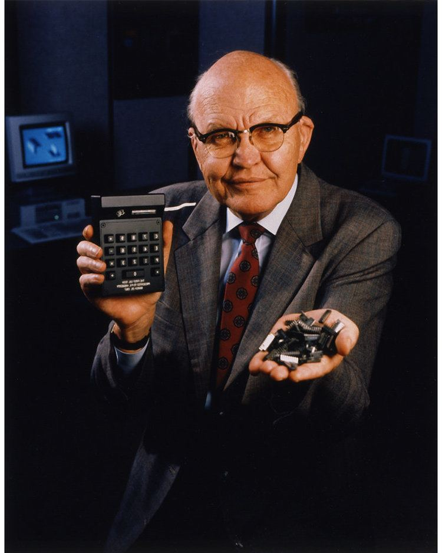

Jack Kilby
The Father of the Integrated Circuit

Jack Kilby holding a pocket calculator and a fist full of ICs both of which he was instrumental in developing.
His Story
- Mr Kilby was born on November 8, 1923 in Jefferson City Mo. Both of his parents degress. His childhood was rather unremarkable. He went to college at U of Illinois Urbana-Champaign were he received his BS in electrical engineering 1947 and his masters in 1950 from the University of Wisconsin-Milwaukee.
- It was while working at Texas Instruments that he made his remarkable discovery. Due to being new and not receiving a summer break he was working on a project dealing with the 'tyranny of numbers'. At that time everything was discreet and every component has to be wired to every other component. Because of this they could not make anything fast because the amount of components made the device prohibitively expensive. That summer using a piece of germanium he was able to show that a pure sine wave could propagate through it. Thus proving that multiple circuits could be etched on one die.
- His patent (US Patent 3,138,743 "Minaturized Electronic Circuits") was filed along with Robert Noyce who made the same discovery around the same time.
- He is also credited with inventing the first hand held calculator and themal printer.
- In 2000 he recieved the Nobel Prize for Physics for his discovery.
- He died on June 20, 2005 of cancer.
“You can take pride in the knowledge that your work will help to improve lives for generations to come.”
--- President Bill Clinton in a letter to Jack Kilby congratulating him on being awarded the Nobel Prize for Physics (December 2000).
To read more on Jack Kilby click here